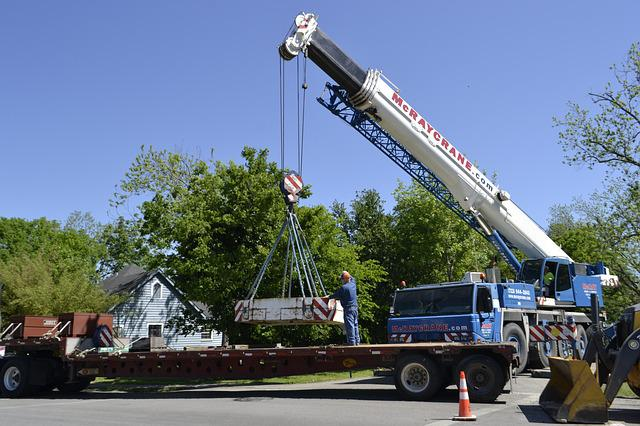
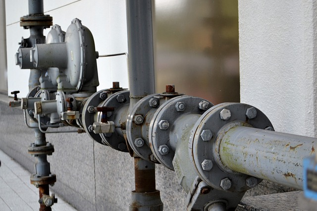

LOLER: Lifting Operations and Lifting Equipment Regulations (1998)
Any equipment used in the workplace for the lifting or lowering of loads must be compliant with LOLER. As owner/users of such equipment it is your responsibility within LOLER to ensure that a Through Examination is carried out at regular intervals by a competent person. A report of the examination is then produced as a result of the Thorough Examination and presented to the client. LOLER state that the competent person carrying out the examination must be “sufficiently independent and impartial to allow objective decisions to be made”
Simply translated, this means that anybody involved with the ownership, use or maintenance of the equipment should not carry out the Thorough Examination as legally they would not be sufficiently independent to do so.
At GEI we can act entirely as an independent body to ensure compliance is maintained. You can also be secure in the knowledge that our independent decisions are made purely with equipment safety in mind and not in any way involved with providing maintenance services as a result of such decisions.


PUWER: Provision and Use of Work Equipment Regulations (1998)
PUWER requires that inspections are carried out by a competent person and that records are maintained, highlighting any defects found and remedial actions required and subsequently taken. It is therefore the responsibility of the owner/user of such equipment to ensure that this compliance is adhered to.
There is often confusion as to what equipment falls under the PUWER regulations. In general terms, equipment used in a work place and that could pose a risk to people health and safety apply. In an industrial setting the following examples would be considered PUWER items:
Loading Shovels, Earth moving equipment, Excavators, Conveyors, Rollers, Agricultural Picking/Sorting Machines, Mechanical cutters, Surface breakers.
PSSR: Pressure System Safety Regulations (2000)
PSSR requires owners/users of certain categories of pressure equipment to ensure that they have a Written Scheme of Examination (WSE) in place. This WSE then outlines how and when the equipment shall be examined by a competent person.
At GEI we can provide both an “On-site” survey of your system in order to produce a WSE and offer an independent and impartial examination as required within the WSE.
Our services for pressure equipment extend to the following:
Compressed Air Receivers, Air/Oil Receivers, Pressurisation Vessels, Auto Claves.
